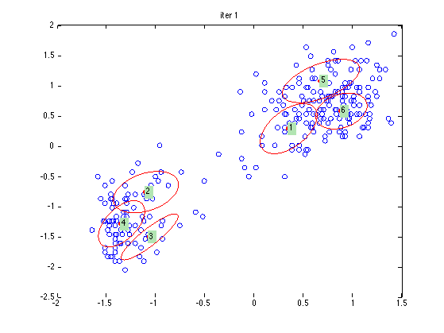
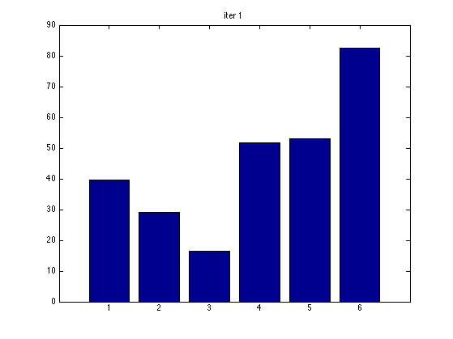
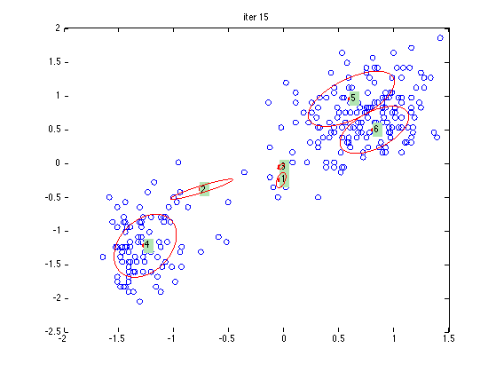
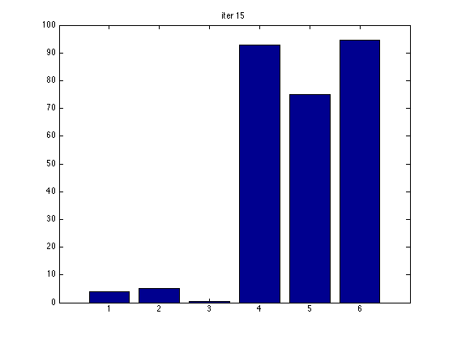
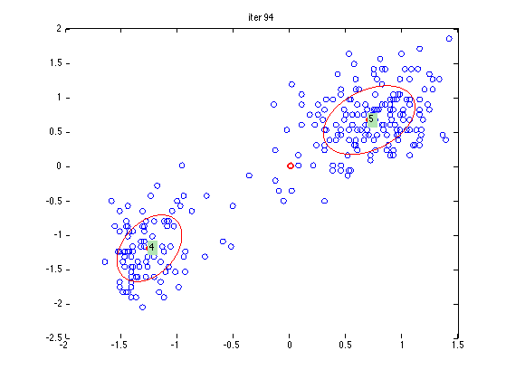
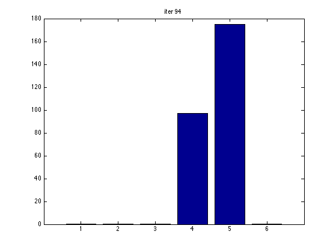
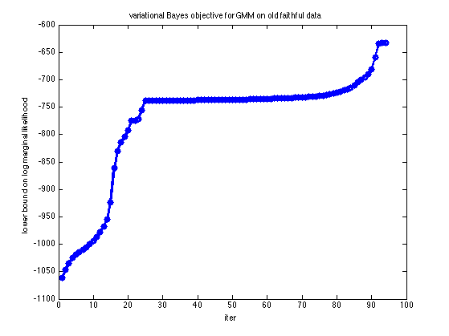

Contents
Fit a mixture of Gaussians using variational Bayes
Reproduce Bishop fig 10.6
% This file is from pmtk3.googlecode.com function mixGaussVbDemoFaithful
Load Data
setSeed(0); X = loadData('faithful'); % 272x2 X = standardizeCols(X);
Run mixGaussBayesFit
K = 6; [model, loglikHist] = mixGaussBayesFit(X, K, 'maxIter', 200, 'plotFn', @plotFn);
Maximum number of iterations has been exceeded Maximum number of iterations has been exceeded iteration 1, loglik -1061.46605 
iteration 2, loglik -1046.88281 iteration 3, loglik -1034.92923 iteration 4, loglik -1025.04048 iteration 5, loglik -1019.30772 iteration 6, loglik -1014.92648 iteration 7, loglik -1010.29860 iteration 8, loglik -1005.05621 iteration 9, loglik -999.82295 iteration 10, loglik -993.61943 iteration 11, loglik -987.00518 iteration 12, loglik -977.61127 iteration 13, loglik -967.44234 iteration 14, loglik -954.56281 iteration 15, loglik -924.03288 
iteration 16, loglik -861.09696 iteration 17, loglik -830.00279 iteration 18, loglik -814.03161 iteration 19, loglik -804.30989 iteration 20, loglik -792.45598 iteration 21, loglik -774.98574 iteration 22, loglik -774.28527 iteration 23, loglik -771.11542 iteration 24, loglik -755.06153 iteration 25, loglik -738.31223 iteration 26, loglik -738.25837 iteration 27, loglik -738.20438 iteration 28, loglik -738.14766 iteration 29, loglik -738.08870 iteration 30, loglik -738.02839 iteration 31, loglik -737.96737 iteration 32, loglik -737.90595 iteration 33, loglik -737.84417 iteration 34, loglik -737.78197 iteration 35, loglik -737.71936 iteration 36, loglik -737.65644 iteration 37, loglik -737.59345 iteration 38, loglik -737.53064 iteration 39, loglik -737.46812 iteration 40, loglik -737.40573 iteration 41, loglik -737.34294 iteration 42, loglik -737.27892 iteration 43, loglik -737.21263 iteration 44, loglik -737.14293 iteration 45, loglik -737.06872 iteration 46, loglik -736.98895 iteration 47, loglik -736.90265 iteration 48, loglik -736.80898 iteration 49, loglik -736.70719 iteration 50, loglik -736.59662 iteration 51, loglik -736.47672 iteration 52, loglik -736.34700 iteration 53, loglik -736.20710 iteration 54, loglik -736.05673 iteration 55, loglik -735.89572 iteration 56, loglik -735.72397 iteration 57, loglik -735.54146 iteration 58, loglik -735.34823 iteration 59, loglik -735.14431 iteration 60, loglik -734.92972 iteration 61, loglik -734.70439 iteration 62, loglik -734.46813 iteration 63, loglik -734.22057 iteration 64, loglik -733.96111 iteration 65, loglik -733.68892 iteration 66, loglik -733.40281 iteration 67, loglik -733.10124 iteration 68, loglik -732.78220 iteration 69, loglik -732.44312 iteration 70, loglik -732.08062 iteration 71, loglik -731.69026 iteration 72, loglik -731.26590 iteration 73, loglik -730.79862 iteration 74, loglik -730.27451 iteration 75, loglik -729.66995 iteration 76, loglik -728.94180 iteration 77, loglik -728.01188 iteration 78, loglik -726.77495 iteration 79, loglik -725.20712 iteration 80, loglik -723.42365 iteration 81, loglik -721.51765 iteration 82, loglik -719.45072 iteration 83, loglik -717.11708 iteration 84, loglik -714.33332 iteration 85, loglik -710.05803 iteration 86, loglik -705.15690 iteration 87, loglik -699.67828 iteration 88, loglik -695.07278 iteration 89, loglik -689.70043 iteration 90, loglik -681.32258 iteration 91, loglik -659.72033 iteration 92, loglik -634.96389 iteration 93, loglik -632.50882 iteration 94, loglik -632.50882 
Plot
figure(); plot(loglikHist, 'o-', 'linewidth', 3) xlabel('iter') ylabel('lower bound on log marginal likelihood') title('variational Bayes objective for GMM on old faithful data') printPmtkFigure('mixGaussVbFaithfulObjVsIter')
end function plotFn(X, alpha, m, W, v, loglik, iter) figure(1);clf fprintf('iteration %d, loglik %8.5f\n', iter, loglik); plot(X(:,1),X(:,2),'o'); D = 2; K = length(alpha); hold on plot(m(:,1), m(:,2),'or','linewidth',2); weight = alpha/sum(alpha); for i = 1:K if weight(i) < 0.001, continue; end % kill off unwanted components MyEllipse(inv(W(:,:,i))/(v(i)-D-1), m(i,:),... 'style', 'r', 'intensity', weight(i), 'facefill', .8); text(m(i,1), m(i,2), num2str(i),'BackgroundColor', [.7 .9 .7]); end title(sprintf('iter %d', iter)) if ismember(iter, [1 15 94]) figure(1); snapnow % for publishing printPmtkFigure(sprintf('mixGaussVbFaithful%d', iter)) figure(2); clf; bar(alpha); title(sprintf('iter %d', iter)) snapnow printPmtkFigure(sprintf('mixGaussVbFaithfulAlphas%d', iter)) end pause(0.1); end